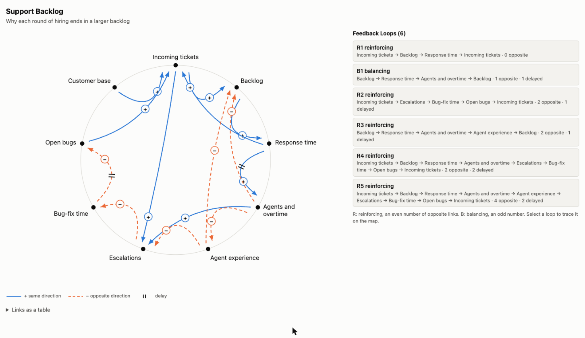
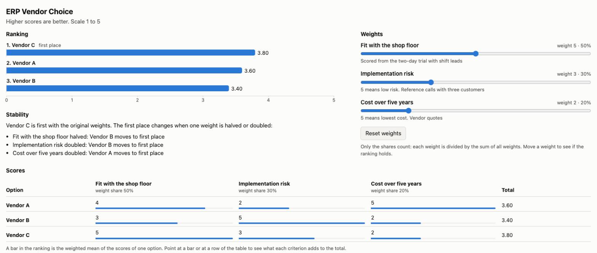
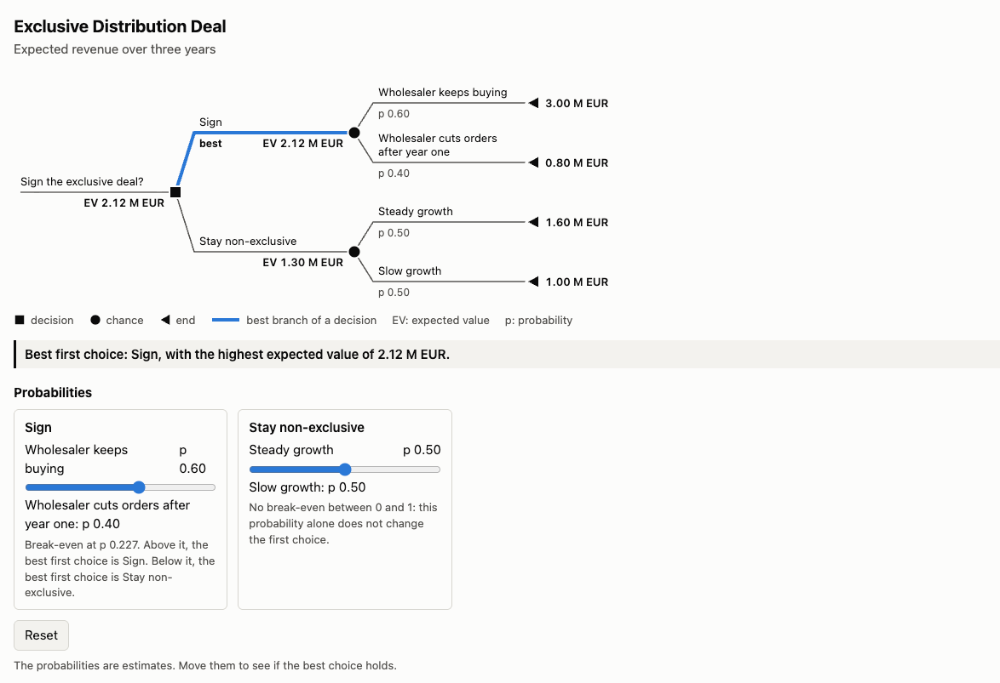
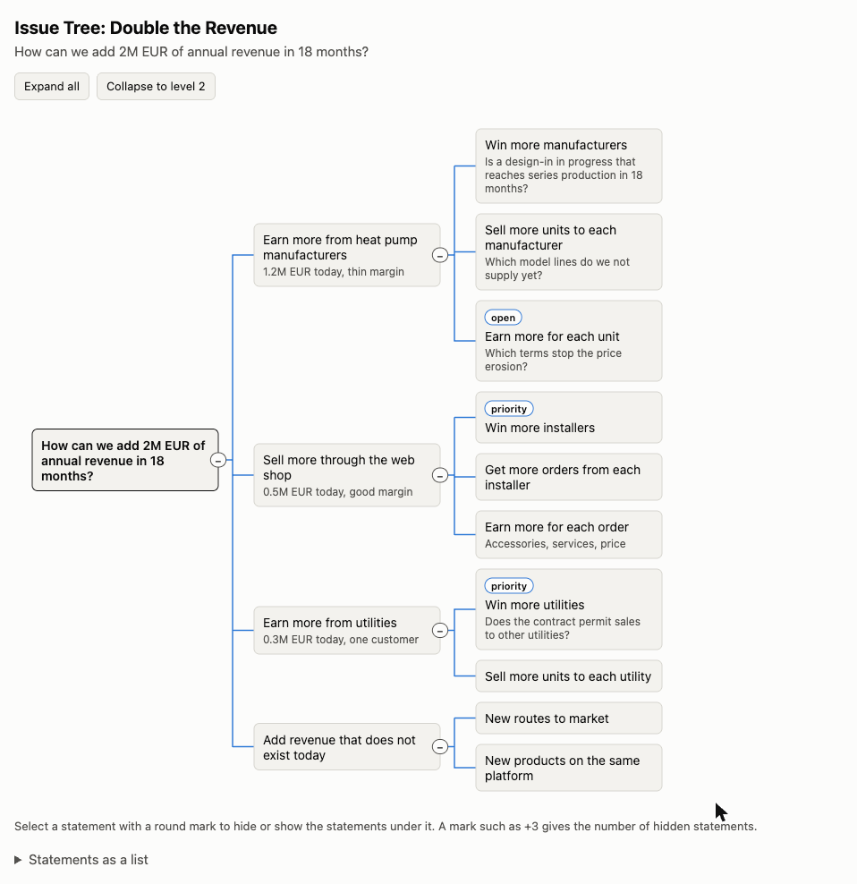
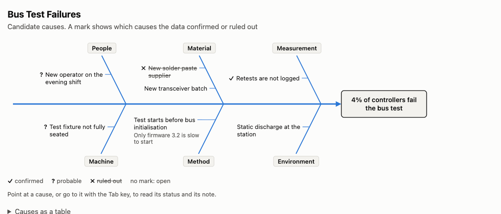
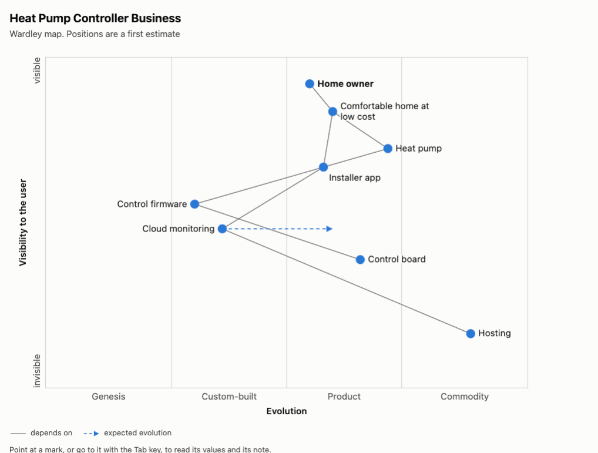
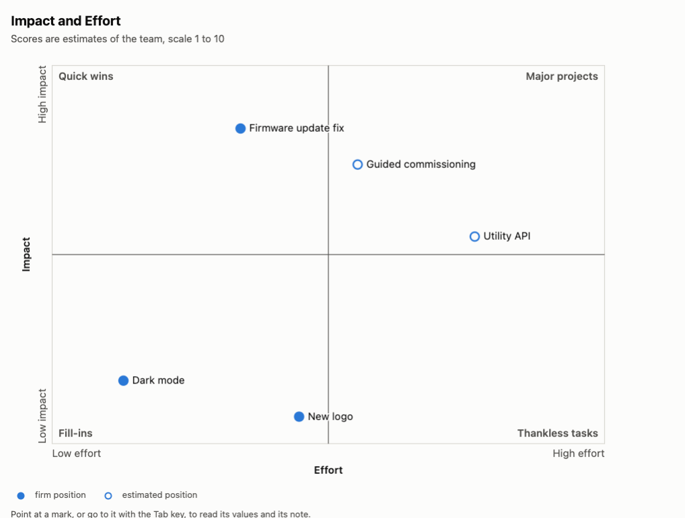

Thinking Tools Samples
Live samples of the pages that the thinking-tools skill builds. Each page is one HTML file with D3 inside it and works offline. The cases are made up.
The Mermaid forms of the same tools, for Markdown notes, are in the gallery.

Loop mapCausal loops on a circle. Select a loop to trace it.
Decision matrixMove the weights and see if the ranking holds.
Decision treeMove the probabilities and see if the best choice holds.
Statement treeAn issue tree with branches that collapse.
FishboneCauses with a status: confirmed, probable, open, ruled out.
Wardley mapComponents by visibility and evolution.
Impact and effortPoints on two axes. Estimates have a hollow mark.